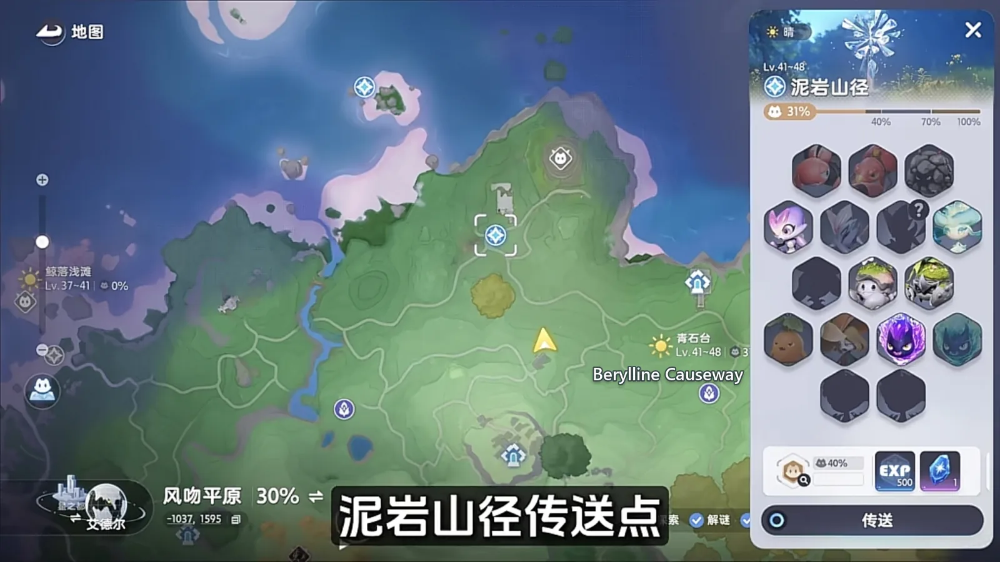
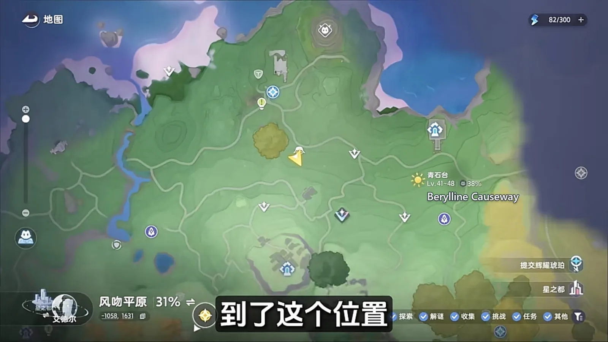
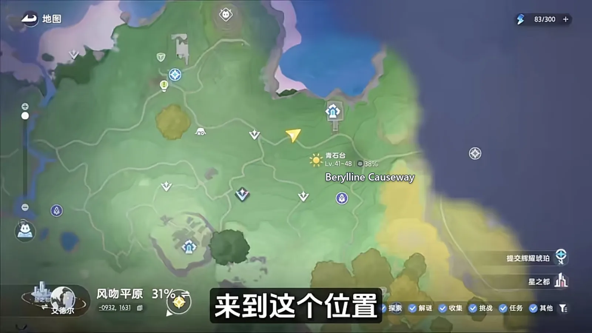
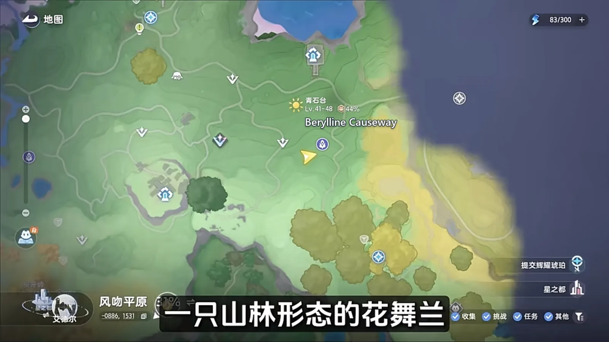
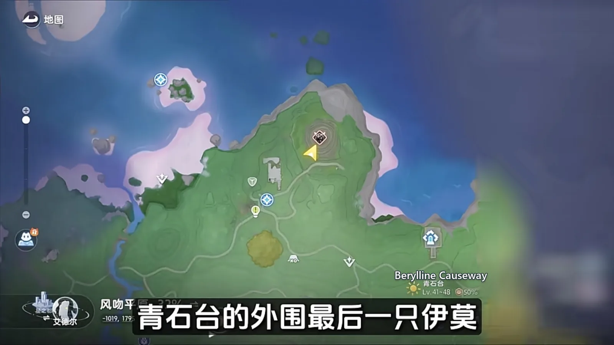
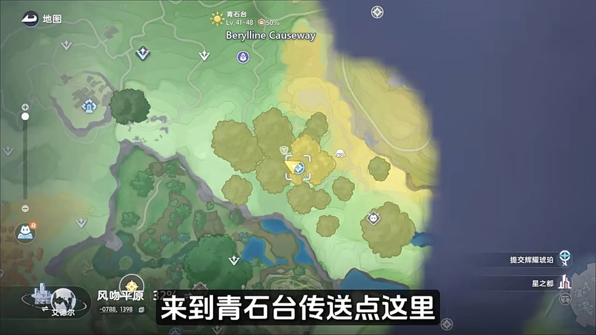
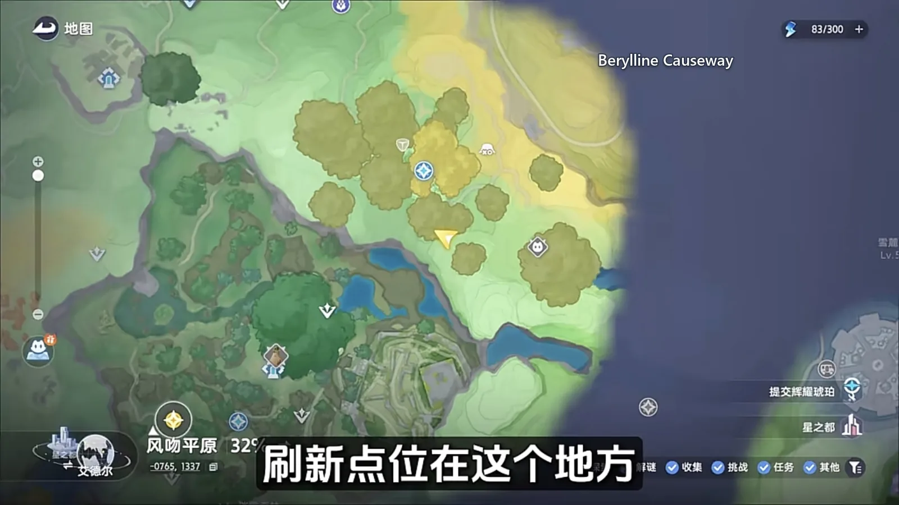
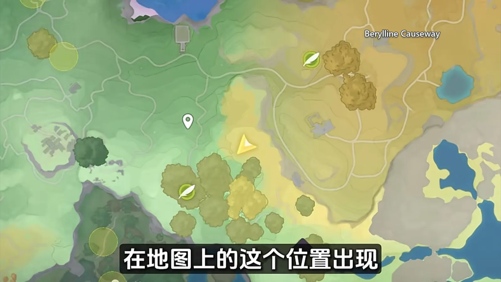

Home首页 / Guides攻略 / Berylline Causeway: Every Spawn Point, Walked in One Lap《全地图、全形态伊莫收集》：青石台
Checked核对于 October 16, 20262026 年 10 月 16 日
Berylline Causeway: Every Spawn Point, Walked in One Lap《全地图、全形态伊莫收集》：青石台
Two passes of Berylline Causeway: the outer ring underfoot in daylight, the terrace inside only after dark, and two Alphas plus a Prismana Form waiting at the end.青石台两趟走完：外圈白天顺着路就收到了，台地内部要等晚上，末尾压着两个 Alpha 和一只虹光形态。
Berylline Causeway hands its Aniimo over in two batches. The outer ring is a matter of walking — almost everything there is underfoot the moment you land. The terrace inside only deals after dark, and one Irisal in between only deals while the sun is up. To take the whole region in one pass the route is fixed: teleport up from Mudstone Pass, sweep the outer ring twice, once in daylight and once after the clock is set to night, pick up the Budclaw by the pond at the Causeway's own waypoint, then go inside for the branches and finish with the Alpha in the depths and its Prismana Form. Two time switches, one line, and nothing to walk back for.青石台的伊莫分两批出来：外圈这几只靠走位就能撞见，台地内部那几只则要切时间、凑数量才肯现身。想一趟收齐，路线是死的 —— 先从泥岩山径传上去，把外围白天和夜里两轮刷新的点位各扫一遍，再到青石台传送点收掉池塘边的花芽蟹，然后进台地内部处理那几只进化分支，最后去碰深处那只 Alpha 和它的虹光形态。照这条线走，两次切时间、一条路，不用来回折返。

Up from Mudstone Pass: clear the outer ring in daylight从泥岩山径上来，先扫外围白天这一圈
Land at the waypoint and Baleetle (Rock · DPS) is all over the roadside — this is the signature of the Causeway, and you will know it on sight.传送点落地，路边到处都是滚滚郎（Baleetle，土 · 输出），这是青石台这一带的招牌，一眼就能认出。
A little way up the hill Waleetle (Rock · DPS) holds this spot. It will not stay put: it goes off on its own the moment you look away, so if you do not run into it, wait where you are and it circles back.往山上走一段，摩托郎（Waleetle，土 · 输出）停在这个位置。它闲不住，会自己东跑西跑，你要是没撞见，原地等一会儿它就绕回来了。

Catch that one and step sideways. The small tree just beside it is where Witchin (Dark · Grass · Regen) spawns, in its Mountain Form.抓完往旁边挪两步，小树附近就是山地形态巫帽草（Witchin，暗 · 草 · 回能）的刷新点。
On toward the underground palace: two that come in numbers, and one that keeps daylight hours往地宫方向：走调草、飘飘花，还有一只卡白天的花舞兰
Run on in the direction of the underground palace and the next stretch puts out a great many at once — Mountain Form Hummin (Grass · Break) and Mountain Woods Form Iris (Grass · DPS) both spawn here in numbers, so one pass through takes several of each.再朝地宫那个方向跑，这一片会一口气刷出很多山地形态走调草（Hummin，草 · 击破）和山林形态飘飘花（Iris，草 · 输出），一趟过去能连收好几只。

Keep climbing from there and Irisal (Grass · DPS) spawns on its own at this one spot, in its Mountain Woods Form. It keeps daylight hours only: once it is dark it does not come out at all, so take this one while the sun is up.抓完继续往山上走，这一处会单独刷一只山林形态花舞兰（Irisal，草 · 输出）。它只认白天，天黑了就不出来，所以这一只要趁日间顺手拿下。

Set the clock to night: two Highland Forms, and the last of the outer ring时间切到晚上：高地形态两只，外加外围最后的岩球郎
Set the clock to night and Sparki (Fire · Regen) spawns all around here in its Highland Form. The rule is the one it follows everywhere else: catch fifteen of them in a row and a Highland Form Flamerion (Fire · Regen) turns up.把时间切到晚上，这附近会刷出很多高地形态幽幽焰（Sparki，火 · 回能）。和别处一样，连着抓满 15 只高地形态幽幽焰，就会刷出一只高地形态幻焰灵（Flamerion，火 · 回能）。
The last of the outer ring is here as well: the Bouldus (Rock · Support) Alpha, spawning at this point on the high ground at the edge of the terrace. Either an ordinary ball or a Pro one will take it.外围的最后一只在这里，就是图上这个位置刷新的岩球郎（Bouldus，土 · 辅助）Alpha，用普通球或者高级球抓都行。

The Berylline Causeway waypoint: a Budclaw by the pond青石台传送点：池塘边的花芽蟹
With the outer ring cleared, walk over to the region's own waypoint. Budclaw (Rock · Grass · Break) spawns at the pond beside it, close enough that there is no walk to speak of.外围清完，走到青石台传送点，旁边的池塘边会刷花芽蟹（Budclaw，土 · 草 · 击破），刷新位置就在不远处，不用走远。

Inside the terrace: two that wait for night进台地内部：晚上才刷的森林与基础形态
The terrace inside is a night visit. The two commonest things in it are Sparki (Fire · Regen) in its Forest Form and Wisptis (Dark · DPS) in its Basic Form — set the clock to night and both are more or less everywhere.台地内部要等晚上再进。里面最常见的是森林形态幽幽焰（Sparki，火 · 回能）和基础形态幽爪镰（Wisptis，暗 · 输出），切到晚上基本随处可见。
Ignitis (Dark · DPS) in its Basic Form asks for no condition at all: come here at night and it is standing at this spot.基础形态的淬刃螳螂（Ignitis，暗 · 输出）没有前置条件，晚上到这个位置就能看到。

The other one here is Flamerion (Fire · Regen) in its Forest Form, which turns up once fifteen Forest Form Sparki have been caught in a row.另一只是森林形态的幻焰灵（Flamerion，火 · 回能），连着抓满 15 只森林形态幽幽焰就会刷出来。
The far end of the terrace: the Ignitis Alpha and its Prismana Form台地深处：淬刃螳螂 Alpha 与它的虹光形态
Finish that stretch and keep going into the depths, and this is where the Ignitis (Dark · DPS) Alpha is. Once it has been found the map marks the spot — but the register gains nothing, because an Alpha is the same creature the register already lists, bigger.这段抓完，往台地深处一直走，就能碰到淬刃螳螂（Ignitis，暗 · 输出）的 Alpha。它一旦被发现，地图上会标出位置，但图鉴里不会收录它。
The last one is here too: Ignitis (Dark · DPS) in its Prismana Form. Open Prismana weather first, or a nature nurture, or it will not appear at this point on the map at all.最后一只留在这里，是虹光形态的淬刃螳螂（Ignitis，暗 · 输出）。要先把天气开成虹光，或者打开自然生态，它才会在地图上这个位置出现。

The order to walk it in走完之后
Berylline Causeway comes down to two passes. In daylight, up from Mudstone Pass: the few the outer ring keeps in the open, and the single Irisal inside the terrace that holds out for the sun. At night, come back for the Highland and Forest Forms of Sparki and the Flamerion they evolve into, and sweep the terrace inside on the way through. The Bouldus and Ignitis Alphas both keep the night; the Prismana Form Ignitis is the last of them, and it wants Prismana weather or a nature nurture switched on before you go looking.收青石台其实就两趟：白天从泥岩山径一路往上，把外围明面上的几只和台地里那只卡白天的花舞兰清掉；夜里再回来，收高地、森林两个形态的幽幽焰和它们进化出的幻焰灵，顺带把台地内部那几只一并带走。岩球郎和淬刃螳螂两只 Alpha 跟着夜色跑；虹光形态的淬刃螳螂压到最后，先把虹光天气或自然生态开起来再去找。
Get that order right and this region, like the ones either side of it, costs you two visits and no doubling back.顺序对了，这一趟不用折返。
More guides相关攻略
- The Mistwoods: Every Spawn Point, Walked in One Lap《全地图、全形态伊莫收集》：迷雾森林 — Two passes of The Mistwoods: the waypoint and the deep wood on either side of the night switch, the walk out for the moth, the pup and the fish, and one Omega that stays put once its quest is done.迷雾森林两批收完：传送点和林子分白天夜里各扫一遍，出森林顺着溪水收掉蝶、犬、鱼，最后是一只做完支线才肯常驻的 Omega。
- The Sea of Flowers: Six Spawn Points, Every Form They Hide《全地图、全形态伊莫收集》：鸢尾花海 — One lap of the Sea of Flowers: the six points the region's Aniimo gather on, which forms wait for night, and what the weather switches on.鸢尾花海一趟跑完：这片图的伊莫挤在六处刷新点上，哪几种形态要等天黑、哪些要等天气。